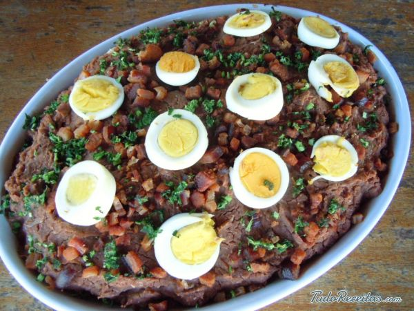

Receitas de Minas
Feij�o tropeiro

INGREDIENTES
- 02 kg de lombo de porco
- 500g de toucinho
- 02 kg de feij�o de corda
- 01 kg de farinha de mandioca torrada
- Cheiro-verde
- Sal a gosto
- Alho amassado
- 1 cebola picada
- 2 Ovos cozidos
POR��ES
Serve 15 pessoas
TEMPO DE PREPARO
60 Minutos
PASSO A PASSO
- Em uma panela, cozinhe o feij�o com �gua e sal.
- Assim que estiver cozido, escorra e reserve.
- Em outra panela, frite o toucinho picado.
- Retire os torresmos, e reserve.
- Corte o lombo de porco em peda�os e tempere com alho e sal.
- Frite a cebola picada na gordura do toucinho, at� dourar.
- Coloque um pouco de a��car e deixe corar.
- Adicione o lombo e frite bem.
- Depois de frita, junte o feij�o cozido, o torresmo, o cheiro-verde picado e adicione a farinha de mandioca, mexendo sempre com uma colher de pau, at� ficar bem homog�nea.
- Pique os ovos cozidos e junte ao feij�o.
- Deixe no fogo por mais alguns minutos.
- Sirva com arroz branco.
Frango com quiabo

INGREDIENTES
- 10 sobrecoxas de frango
- 200 ml de �leo
- 01 folha de louro
- 02 cebolas picadas e fritas
- 03 tomates sem peles e sementes
- 500 ml de caldo de galinha
- cheiro-verde picadinho
- 01 kg de quiabos
- 03 dentes de alho amassados
- 01 colher (sopa) de vinagre
- �gua e suco de lim�o
- sal e pimenta a gosto
- 03 dentes de alho amassados
POR��ES
Serve 10 Pessoas
TEMPO DE PREPARO
50 minutos
PASSO A PASSO
- Limpe e lave as sobrecoxas de frando com �gua e lim�o.
- Perfure com um garfo, em ambos os lados e tempere com sal, pimenta e alho amassado.
- Coloque �leo em uma panela grande, deixe aquecer e frite os peda�os de frango, virando de vez em quando para dourar.
- Cozinhe os tomates com o caldo de galinha e reserve.
- Em outra panela, coloque �leo, aque�a e refogue o alho.
- Adicione o vinagre e mexa de vez em quando.
- Adicione no frango a folha de louro, e deixe fritar mais um pouco.
- Frite as cebolas e adicione ao frango.
- Depois de bem fritos, junte o caldo de galinha com os tomates e o cheiro verde picado.
- Os quiabos depois de fritos, devem ser escorridos e colocados em uma travessa.
Vaca Atolada
INGREDIENTES
- 2 cebolas picadas
- 5 tomates descascados, picados sem sementes
- 4 dentes de alho amassados
- 1 colher (ch�) de salsinha picada
- 1 colher (sopa) de vinagre
- 3 cebolinhas verdes picadas
- cubinho de caldo de carne
- 1 kg de costela de vaca
- 1 kg de mandioca descascada e cortada em peda�os
- 2 colheres (sopa) de �leo
POR��ES
Sere 8 pessoas
TEMPO DE PREPARO
60 minutos
PASSO A PASSO
- Em uma panela, coloque as costelas, a cebola, o alho e o �leo
- Leve ao fogo e refogue at� que dourem.
- Acrescente os tomates, o vinagre, a salsinha, a cebolinha, o cubinho de caldo de carne e �gua suficiente para cobrir o conte�do da panela.
- Deixe cozinhar, at� que a carne fique macia.
- Ent�o, junte a mandioca e �gua suficiente para cozinh�-la.
- Servir quente.
Tutu a Mineira

INGREDIENTES
- 500g de feij�o preto
- 500g de lingui�a de porco
- 03 dentes de alho amassados
- 03 cebolas picadinhas
- 03 cebolas em rodelas
- 03 tomates sem peles e sementes picados
- 02 colheres (sopa) de molho de tomate
- 5 colheres (sopa) de farinha de mandioca
- 05 ovos cozidos
- Sal a gosto
- Cheiro verde picado � gosto
POR��ES
Serve 6 pessoas
TEMPO DE PREPARO
60 minutos
PASSO A PASSO
- Em uma panela, coloque o feij�o para cozinhar.
- Enquanto o feij�o cozinha, em outra panela, frite a lingui�a.
- Assim que estiver frita, adicione a cebola picada, o alho, o tamate picado, o molho de tomate e misture bem.
- Adicione o refogado da panela ao feij�o e bata no liquidificador.
- Retorne a mistura para a panela, adicione a farinha de mandioca, mexendo sempre, para n�o empelotar.
- Passe para uma travessa e coloque os ovos cozidos picados e o cheiro-verde por cima.
- Sirva quente.
P�o de queijo

INGREDIENTES
- 1 ovo inteiro
- 1 colher (caf�) de sal
- 1 x�cara (ch�) de leite
- 1 x�cara (ch�) de queijo minas meia cura ralado
- 1 x�cara (ch�) de polvilho azedo
POR��ES
Serve 15 pessoas
TEMPO DE PREPARO
50 minutos
PASSO A PASSO
- Em uma vasilha, misture todos os ingredientes, menos o leite.
- Em seguida, v� adicionando o leite aos poucos, at� que a massa fique homog�nea.
- Modele os p�es e coloque-os em forma untada com �leo.
- Levar ao forno pr� aquecido por 40 minutos ou at� dourar.
Torresmo

INGREDIENTES
- 2 kg de toucinho
- colheres (sopa) de banha
- Sal a gosto
POR��ES
Serve 7 pessoas
TEMPO DE PREPARO
30 minutos
PASSO A PASSO
- Primeiro, retire toda a pele do toucinho.
- Em seguida, corte em pequenos cubos e polvilhe com um pouco de sal refinado. Reserve.
- Coloque, em uma panela, a banha e leve ao fogo brando. Cuide para que n�o fique muito quente.
- Acrescente o toucinho cortado e frite lentamente.
- Quando corar, tire com a escumadeira e deixe escorrer em papel absorvente.
- Servir ainda quente.
Angu
INGREDIENTES
- 2 litros de �gua fervendo
- 500g de fub�
POR��ES
Serve 15 pessoas
TEMPO DE PREPARO
40 minutos
PASSO A PASSO
- Dissolva o fub� num pouco de �gua fria, mexendo com colher de pau.
- Junte a �gua fervendo e, mexendo sem parar, em fogo alto.
- Quando a massa come�ar a grudar no fundo da panela, reduzir a chama e continuar a mexer at� soltar do fundo da panela.
- Molhe uma forma e coloque o angu.
- Deixar esfriar um pouco e vir�-lo numa travessa.
Mingau de Milho Verde
INGREDIENTES
- 200ml de leite
- a��car � gosto
- 02 colheres (sopa) de fub� de milho
- sal � gosto
- canela em p� � gosto
POR��ES
Serve 1 pessoas
TEMPO DE PREPARO
20 minutos
PASSO A PASSO
- Em uma panela, coloque todos os ingredientes, misture e leve ao fogo.
- Deixe cozinhar por 15 minutos, mexendo sempre.
- Retire do fogo.
- Povilhe canela em p� e sirva.
Bolo Cremoso de Fub�

INGREDIENTES
- 02 colheres (sopa) de farinha de trigo
- 01 colher (ch�) de fermento em p�
- 02 colheres (sopa) de manteiga ou margarina
- 1/2 lata de leite condensado.
- 03 ovos
- 03 x�caras (ch�) de a��car
- 05 x�caras (ch�) de leite
- 01 pires de queijo ralado ou coco
- 1/2 x�cara (ch�) de fub� de milho
POR��ES
Serve 15 pessoas
TEMPO DE PREPARO
40 minutos
PASSO A PASSO
- Coloque todos os ingredientes no liquidificador e bata por 5 minutos.
- Em uma forma untada, coloque a mistura e leve ao forno, pr� aquecido at� ficar bem assado.
- Sirva em seguida